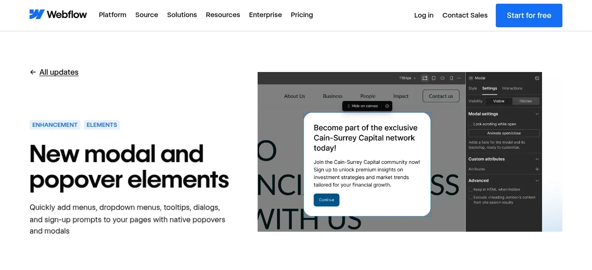
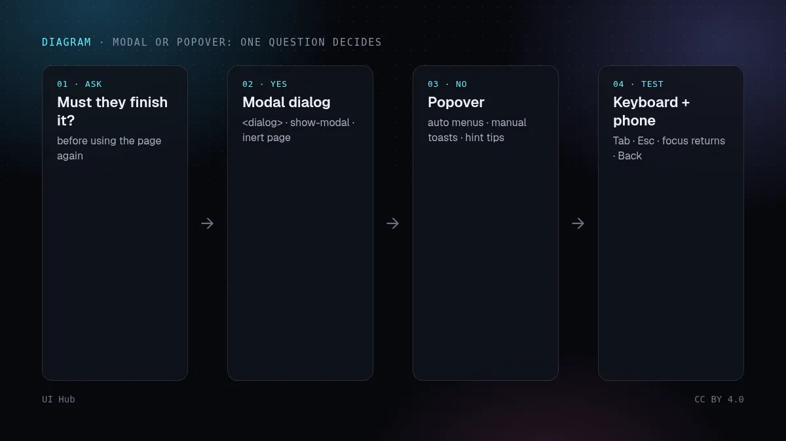
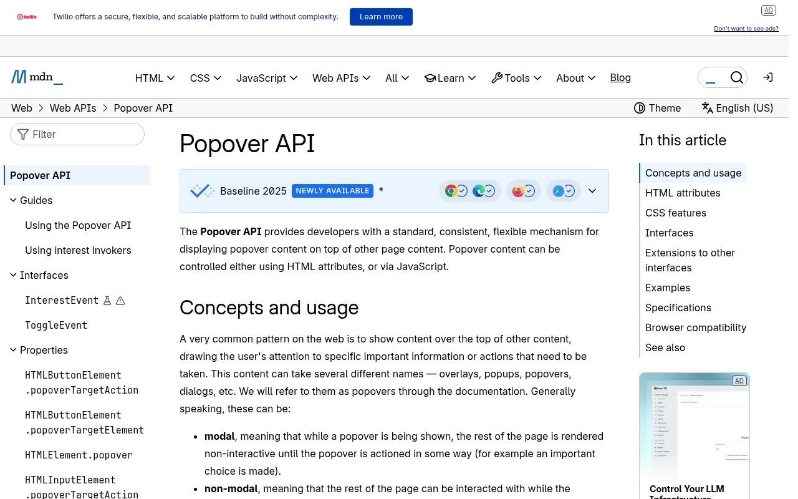

2026 年 11 月 10 日，Webflow 在「添加」面板里加了两个元素：Modal（模态框）和 Popover（浮层）。有意思的不是建站工具终于能做下拉菜单，而是做法。Webflow 说明，浮层使用浏览器原生的 Popover API，由声明式的调用者命令（invoker commands）打开；模态框则是以模态方式打开的原生 <dialog> 元素。发布后的页面打开和关闭它们都不需要 Webflow 自己的 JavaScript，除非你加了动画。一个承载海量页面的无代码工具，选择了平台能力而不是自家脚本。对于浮层已经交给 v0、Lovable、Cursor 或其他智能体来写的团队，这是一个值得注意的信号。

::backdrop 和浮层的 :popover-open 状态写样式。
让大多数 AI 生成工具做「一个下拉菜单」或「一个确认弹窗」，常常得到的是一个 position: fixed 的 div，加上很大的 z-index、一个状态变量，以及背景上的 onClick。预览里看着没问题。然后有人按 Tab，焦点跑到了它背后；按 Esc 没反应；页面在它下面滚动；关闭后焦点丢失；第二个浮层开在了第一个下面。这些在截图里一样都看不出来，所以只靠看图审查生成的界面会漏掉它们。
原生版本替你扛下了这份契约。用 showModal() 打开的 <dialog> 会让页面其余部分变为惰性（inert），关闭时归还焦点；popover="auto" 自带轻触关闭，并会关掉其他 auto 浮层；调用者命令（commandfor 加 command）不写脚本就能把按钮连到任意一个上，MDN 标注它自 2025 年 12 月起进入 Baseline。据 MDN，popover 属性自 2024 年 4 月、<dialog> 自 2022 年 3 月起已在各主流浏览器可用，对大多数用户群来说这已经不是实验。智能体写的自定义代码越少，要审查的自定义代码就越少。
不过设计上的判断不会消失。Webflow 那句话就是对的标准：用户还需要继续操作背后的页面吗？需要，就是浮层；必须先处理完再继续，就是模态框。我们见过的糟糕浮层，大多是本该是浮层的模态框（一个把整页冻住的筛选面板），或者本该是模态框的浮层（一个误点一下就消失的删除确认）。
<dialog> + command="show-modal"。用于确认、必须填完的表单、阻断性错误。给它一个无障碍名称和一个看得见的关闭按钮。popover（默认 auto）。用于菜单、账户面板、筛选面板、日期选择。轻触即关，同时只开一个。popover="manual"。用于需要在代码里关闭的通知或面板，可以同时开多个。popover="hint"，用于不应关掉已打开菜单的工具提示。依赖它之前先查浏览器支持表，提示里只放简短、非必要的文字。show() 打开的 <dialog>，适合放在工作区旁边的检查器或聊天面板。定位方面，CSS 锚点定位（anchor-name、position-anchor、position-area，以及靠近边缘时用于翻转的 position-try-fallbacks）已经可以替代很多菜单里的定位库；MDN 把 position-anchor 标为 2026 年新进入 Baseline。为旧浏览器保留一个后备位置。能让模态框原生支持点击背景关闭的 closedby 属性目前仍标为「有限可用」，暂时别依赖它。
z-index: 9999、position: fixed 加一个背景 div、自写的焦点陷阱，都说明它绕开了平台能力。div；这与 Webflow 的规则一致，也符合无障碍要求。aria-labelledby 指向它的标题，并放一个真正的关闭控件，因为原生模态框没有默认关闭按钮。:popover-open 或 [open] 上动透明度和位移，遵守 prefers-reduced-motion，并确认关闭态最终仍是 display: none。::backdrop 的对比度；在白底上好用的遮罩，到接近黑色的背景上可能就看不见了。<!-- 一个菜单和一个确认弹窗，不写 JavaScript -->
<button commandfor="acct" command="toggle-popover">账户</button>
<div id="acct" popover>…链接…</div>
<button commandfor="del" command="show-modal">删除项目</button>
<dialog id="del" aria-labelledby="del-t">
<h2 id="del-t">确定删除这个项目？</h2>
<button commandfor="del" command="close">取消</button>
<button>删除</button>
</dialog># 把这段贴给你的编程智能体
审查仓库里所有浮层（菜单、提示、对话框、抽屉、通知）。
逐个判断：用户是否必须先处理完它才能继续？
是 -> 原生 <dialog>，用 command="show-modal"（或 showModal()）打开，
aria-labelledby 指向标题，放一个看得见的关闭按钮。
否 -> 菜单和面板用 popover="auto"，通知用 popover="manual"，
由带 commandfor/command 的 <button> 打开。
删掉原生元素已经替代的自定义 z-index 层级、背景 div 和手写焦点陷阱。
菜单用 CSS 锚点定位，并保留静态后备位置。
沿用我们现有的 Token 和动效，遵守 prefers-reduced-motion。
输出一张表：组件、改前、改后、键盘测试结果。
带输入联想的组合框、用方向键移动焦点的多级菜单、复杂的日期选择器，都有原生元素没有实现的键盘模式。这些就用经过充分测试的无头（headless）组件库，最好是渲染进原生顶层的那种，并对照 WAI-ARIA 编写实践里的模式检查。原生原语仍然是底线：比这些简单的东西，就不该自带一套浮层引擎。
UI Hub 相关阅读：智能体的审批界面、Motion 的 pinch 和 press 手势及降级，以及用 Lint 把智能体约束在设计系统上。